Рубин Развивает мудрость. Учит великодушию. Защищает от депрессии. Дарит энергию для покорения жизненных вершин. Рубин сдерживает агрессивность Овнов. Камень обладает целебными свойствами. Он улучшает самочувствие при гипертонии и сердечных заболеваниях. Изменение цвета минерала – предупреждение об опасности. Рубин «не уживается» ни с одним из камней. Его нельзя сочетать с другими самоцветами. Бриллиант (ограненный алмаз) Алмаз – символ побед, к которым так стремятся Овны. Минерал станет мощным оберегом, если он соприкасается с кожей. Желательно носить его на левой руке или на шее. Когда помыслы и душевные качества человека не соответствуют безупречной чистоте алмаза, мощная энергетика камня причинит ему вред. Бюджетные заменители бриллиантов – циркон и цитрин. Аметист Минерал Аметист снимает нервно-психическое напряжение. Ограждает от безрассудных решений. Помогает наладить отношения с домочадцами и коллегами по работе. Сапфир Сапфир, как и рубин, символизирует мудрость. Он подсказывает своему владельцу благоразумные выходы из положения. Камень чрезвычайно полезен для молодых людей, которым не хватает жизненного опыта. Самый распространенный оттенок этого самоцвета – синий. Но для Овна он нежелателен. Благоприятный вариант – желтый сапфир. Агат Отличный талисман для студентов. Концентрирует внимание на учебе, развивает самодисциплину. Оптимальный выбор – агаты «солнечной» окраски: красные, оранжевые, желтые. Горный хрусталь Типичный недостаток Овнов – непонимание других людей, неумение почувствовать их эмоциональное состояние. Это приводит к конфликтам. Горный хрусталь научит нетерпеливого и прямолинейного Овна такту и чуткости.
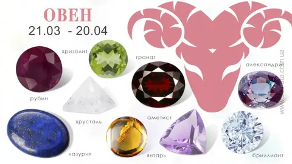Изумруд Великолепный зеленSый самоцвет – олицетворение мудрости. С древних времен его считают мощным оберегом от всех горестей и негативных влияний. Изумруд укрепляет память, развеивает меланхолию. Он стимулирует способность к научным исследованиям и философским открытиям. Камень дарит радость жизни, укрепляет любовь. Магические свойства самоцвета проявляются только на фоне душевной чистоты. Если владелец изумруда одержим темными помыслами и злыми чувствами, изумруд станет его врагом. Хризопраз Минерал яблочного или травянистого оттенка представляет собой наиболее ценный вид халцедона. Его энергетика поможет Тельцу преодолеть инертность, неуверенность в себе, подарит смелость, необходимую для новых начинаний и перемен. Хризопраз обладает целебными свойствами: укрепляет зрение, нормализует давление, улучшает обмен веществ, ослабляет ревматические боли. Под его воздействием кожа становится более упругой и гладкой. Того, кто носит браслет с хризопразом на левой руке, камень оберегает от нервных заболеваний. Агат Агат также относится к халцедонам. Этот полудрагоценный камень является символом красноречия. К тому же, он одаривает своего обладателя материальным процветанием и долгой жизнью. Камни агаты светлых оттенков – белые, голубые, серые – усиливают светлые качества личности. Они особенно полезны для женского здоровья и укрепления семьи. Черный агат – мужской амулет. Он убережет своего хозяина от темных сил, придаст убедительности его словам и действиям. Эти свойства камня пригодятся для продвижения по служебной лестнице. Бирюза Украшение с бирюзой – талисман целеустремленных натур, настойчивых в достижении намеченных целей. Минерал помогает Тельцам в рискованных ситуациях. Считается, что бирюза притягивает деньги. Камень символизирует верную любовь. Это идеальный талисман для девушек. А вот зрелым женщинам лучше от него отказаться. С внутренним миром Тельцов гармонирует как голубая, так и зеленая бирюза. Малахит Светло-зеленый малахит высоко ценится за способность поглощать зло, направленное на его владельца. Он освобождает человека от обид и мрачных мыслей. Приносит пользу при заболеваниях поджелудочной железы, сердечных патологиях. Защищает от радиации. Стимулирует работу жизненно важных желез – эпифиза и гипофиза.
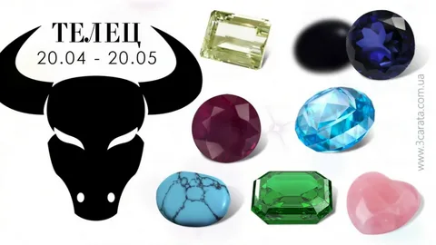Астрологическому знаку, силы которого раскрываются в период летнего цветения и света, чужды помпезные, сумрачные камни. Его амулеты должны быть теплыми и жизнерадостными. Агат Существует поверье, будто агат приносит долголетие. Полудрагоценный минерал таит в себе секреты творческих успехов. Он помогает Близнецам не отказываться от своего призвания после первых неудач, развивает в них недостающие качества – терпение и упорство. Агат дает силы слабым и болезненным людям. Защищает от чужой зависти и злобы. Рекомендуются минералы теплых оттенков – желтые, оранжевые, красные. Александрит Характеру Близнецов часто не хватает твердости и силы. Эти качества помогает обрести самоцвет из породы хризобериллов. Александрит обладает таинственным свойством менять окраску. Зеленый при свете дня, он становится фиолетовым при искусственном освещении. Желтые пятна на его поверхности – сигнал опасности для здоровья или жизни хозяина. Берилл Оберег путешественников. Олицетворение успешной карьеры. Символ бодрости. Проводник положительной энергии. Считается, что берилл помогает выигрывать судебные тяжбы. Этот камень полезно носить ленивцам и тугодумам. Цитрин Неумение Близнецов концентрировать внимание создает проблемы в работе и учебе. От этого недостатка избавляет лимонно-желтый или медово-золотистый кварц – цитрин. Азартных людей камень защищает от необдуманных, рискованных поступков. Словно преданный друг, он всегда на стороне своего обладателя. Сердолик Многие Близнецы одарены литературными и художественными талантами. Оранжево-желтый или красный сердолик – помощник в творчестве. Данный минерал применяют в медицине при лечении щитовидной железы, кишечных и кожных заболеваний. Секрет целебных свойств заключается в слабой радиоактивности отдельных экземпляров.
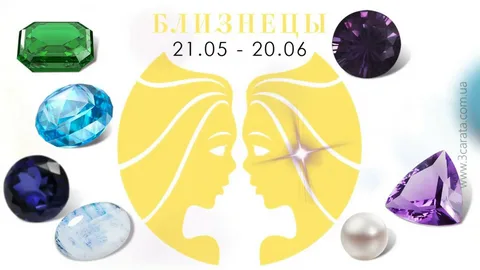Будучи воплощением Водной стихии, Рак противостоит Огню. Поэтому для него нежелательны густо-желтые, оранжевые, ярко-красные, черные минералы, способные подавить человека своей мощной энергетикой. Оптимальный вариант – голубые, зеленые, розовые, бледно-желтые камни. Изумруд Роскошный самоцвет – амулет творческих людей. В приземленных индивидуумах он пробуждает скрытые таланты, может разжечь интерес к философии. Изумруд – защитник путешественников, мореходов, бизнесменов. Это оберег будущих матерей. Считается, что благородный минерал приносит материальное благополучие. Соприкосновение с изумрудом полезно для ранимой психики Раков. Самоцвет дарит им радость и душевное равновесие. Замкнутым натурам камень помогает преодолеть скованность, наладить общение с людьми. Жемчуг Камень ассоциируется с долголетием, процветанием, крепким браком. Создает мощную защиту от зависти. Жемчуг может утратить свой чудесный блеск. Таким способом он предупреждает хозяина о надвигающейся болезни. Лунный камень Полупрозрачный голубовато-серебристый минерал поглощает лунную энергию, избавляя человека от возбуждающего влияния полнолуния. Для Рака это имеет существенное значение. Лунный камень (обычно это Адуляр) полезно носить тем, кто ищет свою любовь. Минерал смягчает нрав владельца, подсказывает разумный выход из сложной ситуации, способствует карьере. Кошачий глаз Так называют образцы минералов, зеленоватые и золотистые переливы которых напоминают таинственный блеск кошачьих зрачков. Это турмалин, берилл и хризоберилл. Их свойства полезны тем, кто хочет привлечь к себе внимание окружающих, наладить общение с коллегами по работе и членами семьи. Данные камни способствуют успеху в карьере.
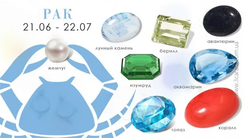Время действия знака совпадает с пиком лета, в многоцветном пейзаже которого уже предчувствуется спад. Солнце наполняет камни Льва оранжево-золотистым, зеленым, красным сиянием. В коллекции оберегов присутствуют также символы близкой осени – властные, суровые минералы. Оптимальное сочетание: 5-10 теплых камней плюс 2-3 холодных. Вместе их носить нельзя. Представитель знака должен учитывать не только сезон, но и время суток, а также обстановку и собственное настроение. Алмаз (Бриллиант) Роскошный самоцвет будто создан для того, чтобы подчеркивать статус царственного знака. Алмаз (Бриллиант) – символ власти и силы. Своему обладателю он помогает налаживать контакты с внешним миром и держать под контролем гневные вспышки. Гелиодор Камень Солнца «Гелиодор» благотворно действует на Львов-руководителей, ученых, студентов. Он обостряет мыслительные способности, усиливает тягу к познанию, совершенствует организаторские качества. Львицам магия Гелиодора дает ключ к семейному счастью. Рубин Рубин — это оберег представителей публичных профессий, высокопоставленных администраторов. Регулирует энергетический баланс владельца, пополняет запасы положительной энергии, нейтрализует темные влияния. Топаз (золотистый) Львы часто бывают раздражительными и придирчивыми. Золотистый топаз восстанавливает их душевное равновесие. Амбициозным личностям он подсказывает, как завоевать симпатию начальства и разгадать коварные замыслы недоброжелателей. Турмалин Устраняет страхи, развеивает недовольство собой, а еще турмалин развивает творческие способности. Хризолит Исполняет роль «психоаналитика». Предостерегает увлекающегося Льва от авантюр. Хризолит помогает улучшить отношения в семье и на работе, избавляет от бессонницы, тревожных мыслей. Янтарь Лучезарный янтарь – эффективный оберег для знака. Дарит удачу и позитивные эмоции. Защищает от завистников, избавляет от депрессии. Улучшает самочувствие при сердечных заболеваниях.
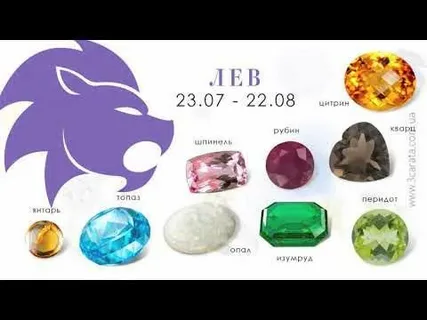Природные минералы должны соответствовать ситуации, имиджу и цвету одежды Девы. Слишком яркий блеск одних самоцветов и мрачная окраска других одинаково чужды природе знака. Амулеты следует распределять по сезонам: для лета подходят светлые камни; для зимы – красные и синие; для осени и весны – оранжевые, зеленые. Астрологи рекомендуют обширную коллекцию оберегов, состоящую из полутора-двух десятков минералов. Авантюрин Обостряет чувства. Дарит жизнерадостность, бодрое настроение и ясное мышление. Олицетворяет красоту любви. Подробнее о Авантюрин. Жемчуг (желтый, розовый) Умиротворяет. Смягчает жесткость и сухость манер Девы. Приносит финансовое благополучие. Но жемчуг полезен только сильным личностям – слабых он подавляет. Нефрит Нерешительным Девам не повредит здоровый азарт. Толика безрассудности, скрытая в магии нефрита, способствует успеху в бизнесе. Наряду с этим, минерал обладает разнообразными целебными свойствами. Оникс Восполняет нехватку жизненных сил. Защищает от стресса и депрессии. Подробнее о Оникс. Тигровый глаз Излечивает от беспричинной ревности. Помогает в повседневных бытовых делах. Приносит счастье только доброжелательным, искренним людям. Хризолит Избавляет от чрезмерной категоричности. Улучшает отношения Девы с домочадцами и коллегами. Подробнее о Хризолит. Яшма Успешной карьере Девы может помешать ее аморфность. Яшма развивает уверенность в себе и деловую хватку.
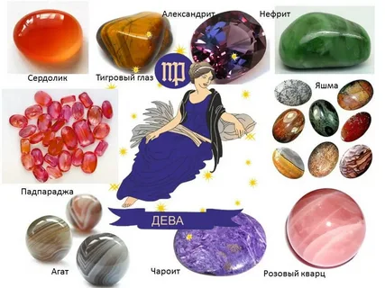Весы – середина, равновесие, мост между рациональной Девой и страстным Скорпионом. У этого знака нет ярко выраженных друзей и врагов среди камней. Весы могут носить украшения почти со всеми самоцветами. И все же некоторые из минералов наиболее предпочтительны. Седьмой знак Зодиака ассоциируется с прекрасной порой золотой осени. Для него особенно благоприятны камни, отражающие в своих гранях переливы голубого, синего, сиреневого неба и разноцветной листвы: зеленой, желтой, оранжевой. Помимо них, рекомендуются некоторые темные минералы – символы непроницаемо черных осенних ночей. Аквамарин Настроит на плодотворную работу. Придаст смелость и решительность, необходимые для достижения цели. Скрепит чувства жениха и невесты. Аквамарин – символ верности и крепкой семьи. Алмаз Весы остро нуждаются в обереге, олицетворяющем твердость характера. Эту функцию успешно выполняет алмаз. Под влиянием его энергетики обладатель самоцвета научится принимать самостоятельные решения. Лазурит Подав оригинальную идею, Весы отступают в тень. Их заслуги присваивают себе другие люди. Лазурит исправит положение, придаст настойчивость в осуществлении планов и проектов. Опал Сверкающие блики на поверхности камня способны подарить робкому, сомневающемуся человеку веру в себя, преобразовать его лень и пассивность в деятельную жизненную позицию. Но если владелец опала лишен порядочности, изменчивый минерал повернется к нему своей коварной стороной. Турмалин Укрепляет зыбкое эмоциональное состояние человека. Помогает хозяину стать более цельной личностью, уравновешивая темные и светлые энергии двойственного знака.
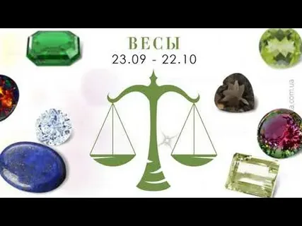Знаку подходят минералы, которые традиционно считаются опасными. Это густо окрашенные самоцветы темных мерцающих оттенков: синие, кроваво-красные, сиреневые, траурно-черные. Полезны для него и камни стихии Воды. Аквамарин Защитник супружеского счастья, символ любви и уважения. Рождает в душе владельца искреннюю признательность к тому, кто его подарил. Гематит Укрощает неконтролируемую энергию Скорпиона, в том числе и сексуальную. Постоянное соприкосновение с гематитом научит представителя знака быть терпимым и ласковым с домочадцами, лучше понимать коллег по работе. Гранат Экземпляры красного и черного цветов усиливают привлекательность своего обладателя. Гранат – символ любви, дружбы, благодарности. Его магия позволяет предугадывать события будущего. Коралл Скорпион подвержен мрачному настроению. Его раздражение нередко обращено на самого себя. Красные, синие, черные кораллы вызволят хозяина из плена депрессии, уберегут от досадных ошибок. Опал Выравнивает отношения в браке, устраняет скандалы на почве ревности. Партнеру Скорпиона часто не хватает внимания и нежности. Опал исправит это упущение. Рубин Это талисман мужчин-победителей. Приносит успех в сфере большого бизнеса и политики. Учит не сомневаться в себе. Избавляет от заносчивости. Синий сапфир Скорпиону бывает трудно избавиться от груза тяжелых воспоминаний. Он способен десятки раз мысленно «прокручивать» обиды, неприятные ситуации. В этом случае им рекомендуется сапфир. Для женщин этот самоцвет имеет особое значение. Он делает их более покладистыми, избавляет от недоверия и тревожных предчувствий.
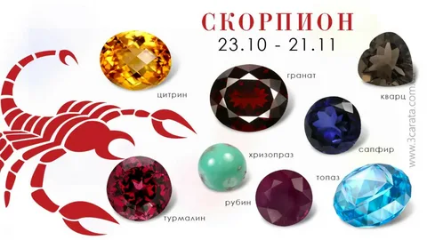Ориентируясь на противоположные начала в природе знака, астрологи рекомендуют составлять коллекцию амулетов талисманов из двух типов камней: зимой благотворное влияние на Стрельцов оказывают красные самоцветы Огня, летом – холодные, мрачноватые минералы. Зимние знаки не нуждаются в большом количестве оберегов. Стрельцу достаточно иметь 5-6 самоцветов. Бирюза Сильная энергетика минерала надежно ограждает Стрельцов от разного рода напастей. Бирюза полезна для самореализации в профессии. Она подскажет, как найти достойных партнеров, создать деловые связи, излечиться от чрезмерной беспечности. Гранат Гранат основной талисман Стрельца. Выполняет много функций: в путешествиях защищает от катастроф, в толпе – от негативных влияний. Способствует карьерному росту и финансовому благополучию. Помогает понять красоту единственной настоящей любви. Рубин Энергетика самоцвета особенно благотворна для мужчин. «Талисман королей» превращает их в победителей, идет ли речь о любви, борьбе за власть, высокую должность, конкуренции в бизнесе или спорте. Подробнее о Рубине. Синий сапфир Открытому, прямодушному Стрельцу трудно хранить тайны. «Камень мудрости» научит своего обладателя сдержанности. Безрассудных «кентавров» украшение с сапфиром убережет от авантюр, научит чувствовать ложь и двуличие. А еще самоцвет стимулирует тягу к знаниям. Топаз Голубой топаз очень хорош для тех, кому приходится сталкиваться с интригами и завистью. Он поможет разгадать коварные планы недоброжелателей. Привлечет деньги. Украшения с этим камнем, в первую очередь, интересуют женщин. Считается, что топаз способен надолго сохранить молодость, внешнее очарование и найти спутника жизни. Подробнее о Топазе. Хризолит Пылкий Стрелец нуждается в амулете, дарующем душевное равновесие и самообладание. Это роль успешно исполняет хризолит. Он оберегает хозяина от конфликтов, учит проявлять такт в отношениях с людьми.
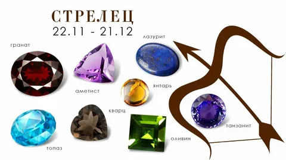В период действия знака так не хватает тепла и света! В это время актуальны «горячие» ярко-красные самоцветы – источник внутреннего огня. Наряду с ними, Козерогу рекомендуются минералы совсем другого рода – сумрачные и коварные, опасные для других. Представителю знака достаточно иметь всего лишь 4-5 наименований камней, один из них – красный, зеленый или черный. Альмандин Козерог должен рационально использовать свой небольшой энергетический потенциал. В этом ему поможет сильный «огненный» самоцвет – альмандин. Гагат Таинственный черный камень усилит склонность Козерога к философским прозрениям. Более приземленным индивидуумам гагат станет превосходным оберегом от негативных энергий и беспричинных страхов. Малахит Зеленый минерал укрепит здоровье его обладателя, К тому же, малахит – символ исполнения желаний. Обсидиан Козероги идут к своим вершинам маленькими шажками. Черный или коричневый обсидиан избавит их от нерешительности, подготовит к переменам. Оникс Магия камня наделит хозяина свойством разгадывать мысли своих противников. Руководителю она принесет уважение коллектива. А еще оникс – оберег от внезапной смерти. Опал Испытав разочарование в делах или любви, Козерог нередко опускает руки, вместо того, чтобы заняться поиском новых возможностей. Опал откроет ему альтернативный вариант для самореализации. Раухтопаз Сумрачный амулет из раухтопаза подарит своему обладателю озарение в момент принятия сложных и ответственных решений. Рубин Пурпурно-красный самоцвет олицетворяет успешную карьеру и финансовое благополучие, прекрасную любовь и счастливую семью. Потемнение рубина сигнализирует об угрозе для его хозяина.
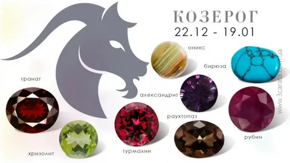Этот образец голубого берилла – символ дружбы, которую так ценит Водолей. Аквамарин имеет необычайно сильную связь со своим владельцем. Чутко реагируя на все печали и недомогания человека, он снимает стресс, упорядочивает мысли, оберегает легковерного индивидуума от обмана. Аметист Магия камня преображает внутренний мир человека в лучшую сторону. Как и аквамарин, он дарит Водолею проницательность. Для достижения успеха в какой-либо деятельности представителям знака часто не хватает целеустремленности, умения сконцентрироваться. Аметист направляет их энергию в нужное русло. Самоцвет обладает незаурядными целебными свойствами – излечивает от бессонницы, нормализует мозговое кровообращение. Бирюза В переводе с древнего персидского языка это название означает «камень счастья». Минерал ассоциируется с победой, успешным достижением поставленной цели. Водолеи нередко нуждаются в деньгах. Бирюза привлекает в их жизнь материальное благополучие. Благодаря этому самоцвету, можно вовремя обнаружить у себя скрытый недуг. Яркая окраска камня тускнеет при первых же симптомах болезни. Гранат Холодность Водолея – преграда на пути к счастливой любви. «Камень страсти» пробуждает сексуальный темперамент и воспламеняет душу. Помимо этого, гранат полезен для повышения самооценки. Женщинам он облегчает роды. Синий сапфир Многие Водолеи мечтают добиться общественного признания. В этом случае им необходимо украшение с сапфиром. «Камень мудрецов» укажет хозяину его настоящее предназначение в жизни, подарит стойкость и мужество, обострит интуицию. Циркон Этот самоцвет развивает дарования, память, тягу к познанию, приносит вдохновение творческим личностям. А еще Циркон вселяет в человека уверенность и оптимизм, заряжает позитивной энергией. Подвес с цирконом поможет обрести спутника жизни одинокой женщине.
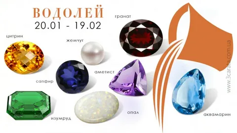Время действия знака – ранняя весна. Ослепительная синева неба разбавлена белизной облаков. Сквозь талый снег пробиваются бледные первоцветы. В самоцветах Рыб будто отражается прохладный весенний колорит. С их внутренним миром, в основном, гармонируют минералы молочных, сиреневых, голубых, зеленых, светло-фиолетовых оттенков. Аквамарин Берилл цвета моря усиливает активное жизненное начало, возвращает душевный покой, смягчает гнев. Он полезен инертным Рыбам. А еще аквамарин притягивает любовь и деньги. Аметист Самоцвет дарит удачу, приносит мир в семью. Он избавляет Рыб от перепадов настроения, заряжает положительной энергией. Аметист смягчает горечь любовной неудачи, способствует зарождению нового чувства. Но у него есть одна коварная особенность. Преподнесенный в подарок, аметист может заставить полюбить дарителя и предать прежнюю любовь. Гагат Камень Гагат по цвету разительно отличается от других амулетов Рыб. Он – черный. Олицетворение тайн ночи, гагат оберегает нервных, чувствительных индивидуумов от мрачных снов, гасит необъяснимые страхи, растворяет в своей черноте все зло, направленное на его хозяина. Жемчуг Это символ верной любви. Рыбам он приносит счастливую и долгую жизнь. Перстень с жемчугом – защита от воров и мошенников. Потускнение самоцвета сигнализирует о развитии скрытого недуга у его владельца. Лунный камень Наряду с траурно-черным гагатом, голубовато-серебристый адуляр бережет сон Рыбы, помогает сохранить хладнокровие в стрессовых ситуациях. Лунный камень привлекает деньги. Но его нельзя носить постоянно – минерал притупляет остроту реакции в момент опасности. Опал Рыбам свойственно приукрашивать действительность. Опал ограждает их от завистников, аферистов, лжецов. Слабым натурам он придает твердость. Из-за переменчивой окраски опал ассоциируется с непостоянством. Но Рыбам молочно-белая разновидность минерала (кахолонг) приносит семейное благополучие и возвышенную любовь. Среди представителей знака много творческих людей. Опал усиливает их таланты, рождает вдохновение.
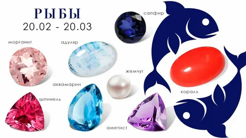